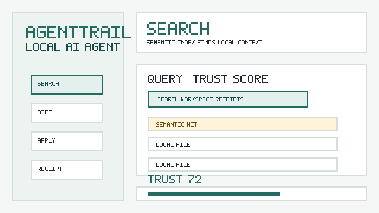

Search local workspace
Find the selected workspace note before proposing an edit.
docs/demo-proof/search-results.jsonThis page proves AgentTrail's core promise with deterministic demo data. The same files generate the README GIF, the receipt, and the shareable report, so launches can block when the proof gets stale.
npm run demo:proofregeneratenpm run demo:healthverify
Find the selected workspace note before proposing an edit.
docs/demo-proof/search-results.jsonShow a unified diff and keep writes locked until approval.
docs/demo-proof/diff-preview.patchWrite the approved content into the demo workspace.
docs/demo-proof/applied/notes/launch-note.mdCapture the model, selected files, tool steps, diff, trust score, and replay command.
docs/demo-proof/receipts/trust-loop-receipt.mdGenerate a polished HTML report that can be shared without the app running.
docs/demo-proof/reports/trust-loop-report.htmlThese are the files that create and verify the proof bundle.